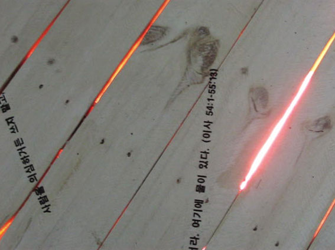
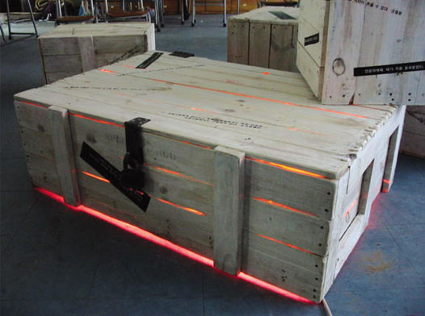

제목 / 사라질 추억들을 이 안에...


재료 / Shiping Box용 원목, 수성 페인트 채색, 분홍색 & 연두 색조명, 녹음기(수업소리) 재개발로 사라질 학교에서의 추억과 물건들을 담아 갈 상자들을 표현/ 시각, 청각, 촉각의 체험이 가능한 작업. 재건축을 위해서, 임시라도 다들 짐을 꾸려 이사를 해야한다. 그러나 이 Box안에는 유형적인 짐들 뿐 아니라 그 사라질 학교에서 그들이 가졌던 추억들과 상황들을 담아 간다... (그 표현으로 영어 수업하는 것을 녹음하여 상자 안에 틀어 놓으므로써 좀 소란한 듯 아련히 그들의 과거가 들리게 한다.)---청각적 흔적
분홍색 & 연두색 조명은 아련한 그들의 추억을 분홍빛과 연두 빛으로 표현하여 담아둔 상자 속으로부터 그 빛들이 새어 나오게 했다. 상자 겉에 새겨진 속담과 명언들 또한 그들이 교육받은 흔적으로..
수업 받는 소리가 청각적 흔적이라면 이것들은 그들 수학의 시각적 흔적이다.
이처럼 이 작업에서는 그들의 추억들을 시각적 청각적 표현하고 또 직접 그 상자에 앉을 수 있는 실용성을 겸비하여 관객에게 시각, 청각, 촉각의 체험을 하도록 하는 작업이다
|
 about us
about us